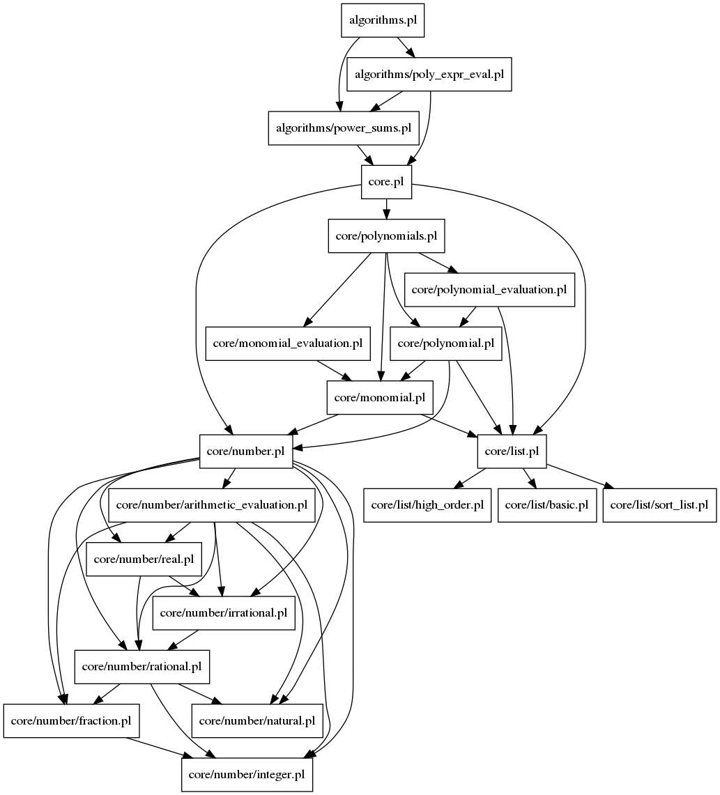

Documentation for Prolog file: algorithms.pl
File used to include all algorithms used to have a proper symbolic calculator.

Included files:
algorithms/power_sums.html
algorithms/poly_expr_eval.html
Generated with DYP